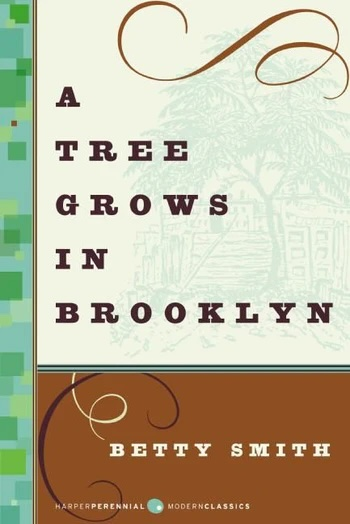
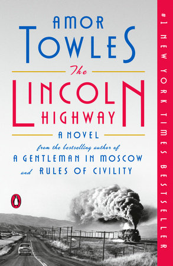
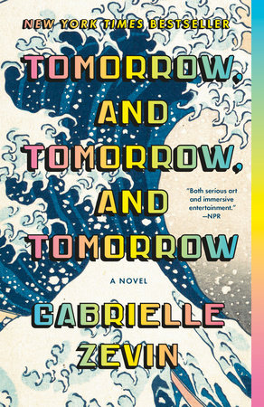
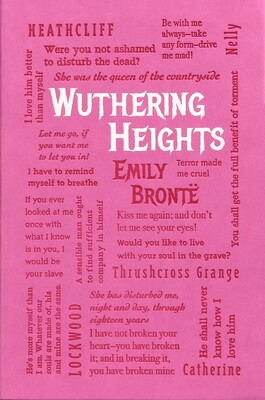

A couple weeks ago my husband and I did a little tour of Italy. We spent a few days in Venice where we wandered through the tight alleyways and sipped wine on the canals. Then we took a train to Italy's west coast to hike and eat Monteressina cake in Cinque Terre. Following some phenomenal frito misto, we took another train to Florence and soaked up some history and more wine. Florence is most people's favorite, but we much preferred Cinque Terre and Venice!
Though I have many favorite restaurants, one that I've returned to time and time again is Ports Cafe in Geneva, NY. Their specials menu changes every day producing exciting, inventive, and delicious results and the atmosphere is always cozy.
This isn't particularly special, but I do love pizza. I don't need
anything fancy, a plain pie, as we call it in NJ, with a coke will do
just fine. But I do also love a white pizza or a grandma pie.
| Title | Cover | Author | Summary |
|---|---|---|---|
| A Tree Grows in Brooklyn |  | Betty Smith | A coming of age story centered around Francie Nolan, an idealistic girl growing up in the slums of Williamsburg, Brooklyn. |
| The Lincoln Highway |  | Amor Towles | Fresh out of juvenile detention in 1954, Emmett Watson wants nothing more than to pick up his eight-year-old brother Billy from their hometown in Nebraska and start a new life in California, but Emmett's friends from juvenile detention have snuck out upon his departure with other plans in mind. |
| Tomorrow, and Tomorrow, and Tomorrow |  | Gabrielle Zevin | Estranged childhood friends Sam Masur and Sadie Green run into each other while in college in Boston. They rekindle their bond through their love of video games by creating their own. |
| Wuthering Heights |  | Emily Bronté | A silly, irrelevant man rents a house from Heathcliff, an odd recluse. The story of Heathcliff's tragic upbringing unfolds. |